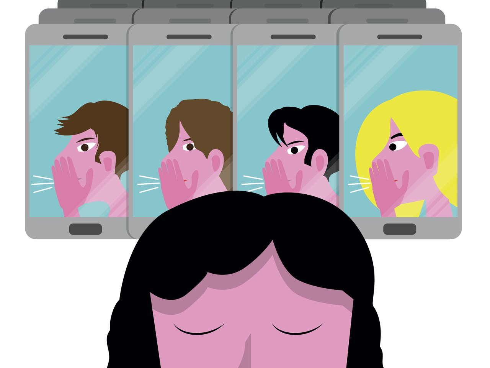
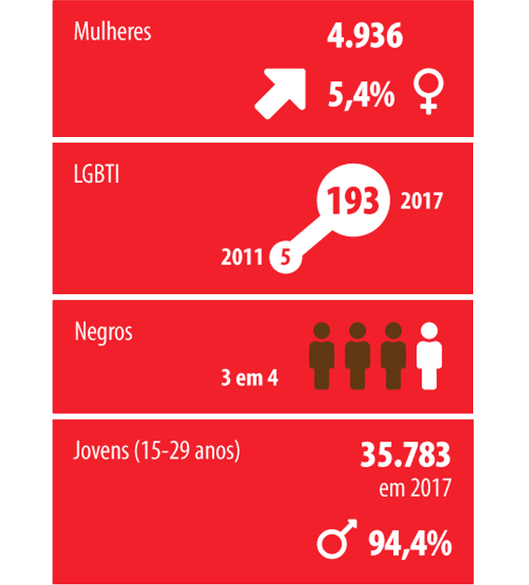

História de uma vítima
2019 - Katia Valeria Nunes Bastos, de 47 anos
Katia Valeria Nunes Bastos, de 47 anos, recebeu uma solicitação de corrida. A motorista de aplicativo não imaginava que seu cliente acabaria com sua vida. O homem estuprou e matou a vítima. O corpo de Katia foi encontrado por PMs, na noite do crime, dentro de seu carro, às margens da Rodovia Washington Luís, na pista sentido Petrópolis, em Duque de Caxias. A mulher tinha sinais de agressão no rosto e foi estrangulada. O corpo estava no banco de trás do veículo e o suspeito, no banco da frente. Inicialmente, os PMs, que faziam patrulhamento na rodovia acreditaram se tratar de um acidente, mas ao se aproximarem do veículo viram o corpo de Katia.
CONCEITOS
Violência contra a mulher
De acordo com a Convenção de Belém do Pará (Convenção Interamericana para Prevenir, Punir e Erradicar a Violência Contra a Mulher, adotada pela OEA em 1994) violência contra a mulher é qualquer ação ou conduta, baseada no gênero, que cause morte, dano ou sofrimento físico, sexual ou psicológico à mulher, tanto no âmbito público como no privado.
O assédio também é uma violência que pode ocorrer no ambiente de trabalho, em que a mulher se sente muitas vezes intimidada, devido a este tipo de prática ser exercida principalmente por pessoas que ocupam posições hierárquicas superiores as mesmas.
Mulheres lésbicas e bissexuais podem sofrer diversos tipos de violência em função de sua orientação sexual, desde agressões físicas, verbais e psicológicas, até estupros corretivos (que pretendem modificar a orientação sexual da mulher). Mulheres transexuais também se tornam alvos de preconceitos e agressões múltiplas, e ainda lidam com violências dentro de instituições, como as que ocorrem no ambiente de trabalho e nos serviços de saúde.
Violência física (visual):
É aquela entendida como qualquer conduta que ofenda integridade ou saúde corporal da mulher. É praticada com uso de força física do agressor, que machuca a vítima de várias maneiras ou ainda com o uso de armas, exemplos: Bater, chutar, queimar. cortar e mutilar.
Violência psicológica (não-visual, mas muito extensa):
Qualquer conduta que cause dano emocional e diminuição da autoestima da mulher, nesse tipo de violência é muito comum a mulher ser proibida de trabalhar, estudar, sair de casa, ou viajar, falar com amigos ou parentes.
Violência sexual (visual):
A violência sexual está baseada fundamentalmente na desigualdade entre homens e mulheres. Logo, é caracterizada como qualquer conduta que constranja a mulher a presenciar, a manter ou a participar de relação sexual não desejada; quando a mulher é obrigada a se prostituir, a fazer aborto, a usar anticoncepcionais contra a sua vontade ou quando a mesma sofre assédio sexual, mediante intimidação, ameaça, coação ou uso da força; que a induza a comercializar ou a utilizar, de qualquer modo, a sua sexualidade.
Violência patrimonial (visual-material):
Importa em qualquer conduta que configure retenção, subtração, destruição parcial ou total de objetos pertencentes à mulher, instrumentos de trabalho, documentos pessoais, bens, valores e direitos ou recursos econômicos, incluindo os destinados a satisfazer suas necessidades.
Violência moral (não-visual):
Entende-se por violência moral qualquer conduta que importe em calúnia, quando o agressor ou agressora afirma falsamente que aquela praticou crime que ela não cometeu; difamação; quando o agressor atribui à mulher fatos que maculem a sua reputação, ou injúria, ofende a dignidade da mulher. (Exemplos: Dar opinião contra a reputação moral, críticas mentirosas e xingamentos). Obs: Esse tipo de violência pode ocorrer também pela internet.
Aumento na violência contra as mulheres no Brasil
A edição do Atlas da Violência deste ano mostra que a taxa de homicídio de mulheres cresceu acima da média nacional em 2017. O estudo feito pelo Instituto de Pesquisa Econômica e Aplicada (Ipea) e pelo Fórum Brasileiro de Segurança Pública revela que, enquanto a taxa geral de homicídios no país aumentou 4,2% na comparação 2017-2016, a taxa que conta apenas as mortes de mulheres cresceu 5,4%. Apesar disso, o indicador continua bem abaixo do índice geral (31,6 casos a cada 100 mil habitantes), com 4,7 casos de mortes de mulheres para cada grupo de 100 mil habitantes. Ainda assim, é a maior taxa desde 2007.
Vítimas de homicídios no Brasil
Em 28,5% dos homicídios de mulheres, as mortes foram dentro de casa, o que o Ipea relaciona a possíveis casos de feminicídio e violência doméstica. Entre 2012 e 2017, o instituto aponta que a taxa de homicídios de mulheres fora da residência caiu 3,3%, enquanto a dos crimes cometidos dentro das residências aumentou 17,1%. Já entre 2007 e 2017, destaca-se ainda a taxa de homicídios de mulheres por arma de fogo dentro das residências que aumentou em 29,8%.
O Ipea mostra ainda que a taxa de homicídios de mulheres negras é maior e cresce mais que a das mulheres não negras. Entre 2007 e 2017, a taxa para as negras cresceu 29,9%, enquanto a das não negras aumentou 1,6%. Com essa variação, a taxa de homicídios de mulheres negras chegou a 5,6 para cada 100 mil, enquanto a de mulheres não negras terminou 2017 em 3,2 por 100 mil.
"A gente tem o crescimento da violência contra a mulher e todas estão sendo atingidas, mas as mulheres negras estão sendo atingidas com uma força muito maior", disse Samira Bueno, diretora executiva do Fórum Brasileiro de Segurança Pública.
Legislação
Lei Maria da Penha
Lei Maria da Penha lei nº 11.340, de 2006, é uma lei que visa proteger a mulher da violência doméstica e familiar. Foi sancionada em 7 de agosto de 2006, completa 13 anos de vigência. Foi criada para combater a violência doméstica e familiar, para garantir a punição dos agressores e cria mecanismos para prevenir a violência e proteger a mulher.
Lei do feminicídio
A Lei do feminicídio foi criada devido a perda de vidas em derivação de abusos, violência doméstica, discriminação, menosprezo, ou nos casos em que a mulher é levada a cometer suicídio por abuso psicológico, necessidade de providências mais rigorosas refletida nos altos índices de violência contra as mulheres no Brasil. A Lei 13104 de 9 de março de 2015 tem o objetivo de incentivar a igualdade de gênero e pontua alguns agravantes.
Lei Carolina Dieckmann
A Lei Carolina Dieckmann Apesar de não ser uma lei destinada exclusivamente a mulheres, a motivação veio contra um crime que acontece com muitas delas. A Lei 12.737/12 promoveu alterações no código penal para definir crimes cibernéticos no Brasil. Foi sancionada pela ex-presidente Dilma Rousseff em novembro de 2012. Ganhou o nome de Lei Carolina Dieckmann justamente por um caso ocorrido com a atriz, que teve fotos íntimas obtidas de seu computador pessoal e divulgadas na internet sem sua autorização.
Lei 172/2014 Descer fora do ponto de ônibus após às 22h
A lei 172/2014 Descer fora do ponto de ônibus após às 22h Embora nem todos os municípios brasileiros adotem essa lei, muitas cidades brasileiras permitem que mulheres desçam fora do ponto de ônibus no período que vai das 22h às 5h do dia seguinte para sua segurança, principalmente em áreas de grande periculosidade.
Estatuto da Criança e do Adolescente (Lei 8069/1990), se a vítima é menor de 18 anos;
Estatuto da Criança e do Adolescente (Lei 8069/1990), se a vítima é menor de 18 anos; Embora nem todos os municípios brasileiros adotem essa lei, muitas cidades brasileiras permitem que mulheres desçam fora do ponto de ônibus no período que vai das 22h às 5h do dia seguinte para sua segurança, principalmente em áreas de grande periculosidade.
Políticas Públicas
Ligue 180
O Ligue 180 é um serviço de utilidade pública gratuito e confidencial (preserva o anonimato), oferecido pela Secretaria Nacional de Políticas, desde 2005.
O Ligue 180 tem por objetivo receber denúncias de violência, reclamações sobre os serviços da rede de atendimento à mulher e de orientar as mulheres sobre seus direitos e sobre a legislação vigente, encaminhando-as para outros serviços quando necessário.
A Central funciona 24 horas, todos os dias da semana, inclusive finais de semana e feriados, e pode ser acionada de qualquer lugar do Brasil e de mais 16 países (Argentina, Bélgica, Espanha, EUA (São Francisco), França, Guiana Francesa, Holanda, Inglaterra, Itália, Luxemburgo, Noruega, Paraguai, Portugal, Suíça, Uruguai e Venezuela). Desde março de 2014, o Ligue 180 atua como disque-denúncia, com capacidade de envio de denúncias para a Segurança Pública com cópia para o Ministério Público de cada estado. Para isso, conta com o apoio financeiro do Programa ‘Mulher, Viver sem Violência’.
Programa ‘Mulher, Viver sem Violência’
O Programa “Mulher, Viver sem Violência” foi lançado pela Presidente Dilma Rousseff, em 13 de março de 2013, com o de objetivo de integrar e ampliar os serviços públicos existentes voltados às mulheres em situação de violência, mediante a articulação dos atendimentos especializados no âmbito da saúde, da justiça, da segurança pública, da rede socioassistencial e da promoção da autonomia financeira. A iniciativa foi transformada em Programa de Governo por meio do Decreto nº. 8.086, de 30 de agosto de 2013.
ONGs que ajudam mulheres violentadas
1º Artemis
Fundada em 2013, a Artemis é uma organização que visa promover a autonomia feminina e contribuir para a erradicação de todas as formas de violência cometidas contra as mulheres. Além de combater a violência doméstica, essa ONG se preocupa também com a violência obstétrica, cometida por profissionais da saúde no momento do parto.
Os valores que permeiam a Artemis são baseados no tripé sugerido por Mahatma Gandhi, sendo eles a Verdade, a Autonomia e a Não-Violência. Por meio dessa visão, a ONG auxilia a implementação de serviços e políticas que tenham o objetivo de melhorar as condições de vida das mulheres.
Também oferta cursos, realiza pesquisas e disponibiliza um acervo que contribua na conscientização e reflexão da sociedade sobre a realidade de vida da mulher.
Acesse as redes sociais da Artemis

2º Associação Fênix
Além de combater a violência doméstica, essa ONG fundada em 2006 também trava lutas contra a violência sexual e busca promover a socialização e o atendimento psicossocial de crianças e jovens que convivem com o vírus HIV.
O objetivo da ONG desde sua fundação é ser uma referência efetiva no trabalho com crianças, jovens e famílias em situação de vulnerabilidade, negligência, abuso e exploração sexual e do trabalho infantil.
Acesse as redes sociais da Associação Fênix

3º Associação Fala Mulher
Localizada em São Paulo, a Associação Fala Mulher é uma das diversas ONGs que auxiliam mulheres em situação de violência na cidade. Ela atua fornecendo atendimento multidisciplinar às mulheres, crianças, adolescentes ou idosos que foram vítimas de violência doméstica.
Além de oferecer auxílio jurídico, conta com psicólogos, assistentes sociais e educadores que dão apoio e viabilizam abrigos sigilosos para a proteção da vítima e de filhos que corram risco de morte.
Acesse as redes sociais da Associação Fala Mulher
4º SOS Mulher e Família
Construída em 1997, essa ONG trabalha em conjunto com a Delegacia da Mulher e a Casa Abrigo Travessia em Uberlândia (MG). Além do levantamento de dados para viabilizar e incentivar políticas públicas de proteção à mulher, atua no atendimento de mulheres em situação de violência e também com a Formação Continuada da equipe de voluntários que torna possível o funcionamento da SOS Mulher.
Entre suas conquistas estão a Patrulha de Atendimento Multidisciplinar (PAM) que desde 2003, em conjunto com a Polícia Militar de Uberlândia, promove o atendimento mais efetivo às denúncias de violência e auxilia na redução da reincidência dos abusos.
Acesse as redes sociais da SOS Mulher e Família

5º Asbrad – Associação Brasileira de Defesa da Mulher, da Infância e da Juventude
Fundada em 1997, por profissionais de diversas áreas engajados na defesa dos direitos humanos, dentre eles a presidente Sra. Dalila Figueiredo.
A equipe é multidisciplinar e os atendimentos voltados à população carente do município de Guarulhos, sendo que a partir de 2008 a instituição ampliou seu trabalho às 27 capitais brasileiras.
Por meio de convênios celebrados com a Secretaria Especial de Direitos Humanos, a Defensoria Pública do Estado de São Paulo, Fundação CASA, a Prefeitura de Guarulhos, esta através do Fundo Municipal da Criança e do Adolescente e do Fundo Municipal de Assistência Social, e a Agência de Cooperação Internacional CORDAID são desenvolvidos projetos de apoio à vítimas de violência doméstica e sexual, vítimas do tráfico de seres humanos, violência contra o idoso, execução de medida socioeducativa aplicadas a adolescentes em conflito com a lei e de defesa das crianças e adolescentes.
Acesse as redes sociais da Asbrad